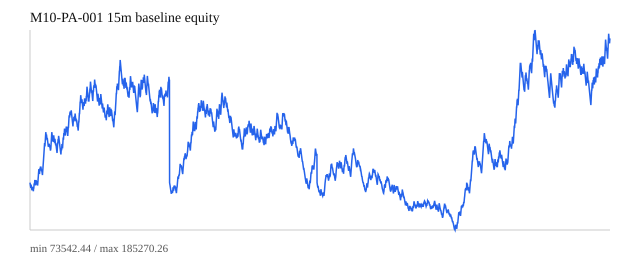
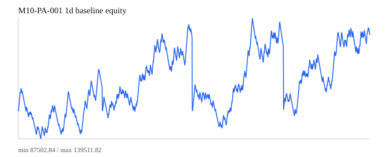
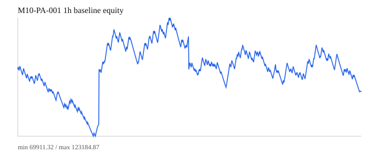
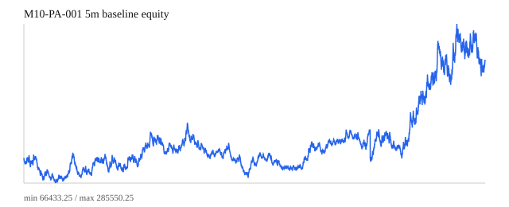
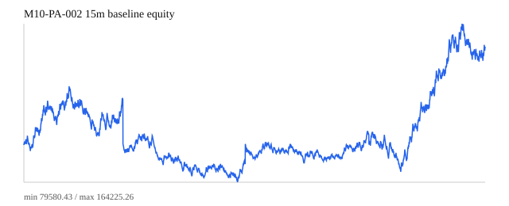
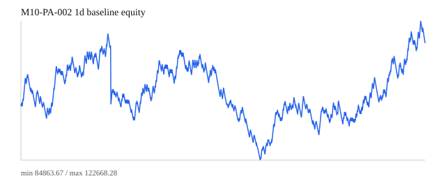
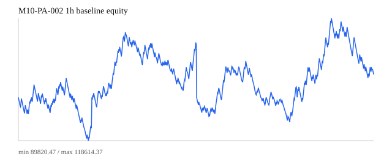
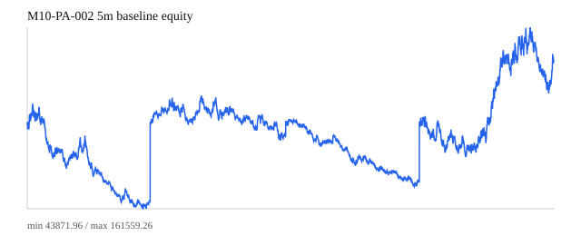
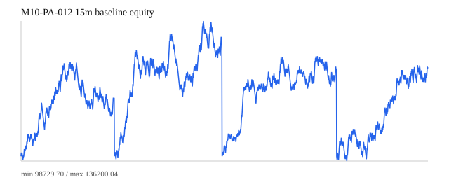
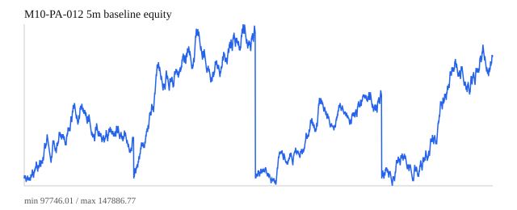

Scanner Candidates
| Symbol | Strategy | TF | Dir | Hyp Entry | Hyp Stop | Hyp Target | Readonly Price | Hyp R | Review |
|---|---|---|---|---|---|---|---|---|---|
| NVDA | M10-PA-012 | 15m | short | 200.7200 | 202.7500 | 198.8100 | 208.270 | -3.7192 | needs_read_only_bar_close_review |
| NVDA | M10-PA-012 | 5m | short | 200.7200 | 202.7500 | 198.8100 | 208.270 | -3.7192 | needs_read_only_bar_close_review |
| QQQ | M10-PA-001 | 1d | short | 642.2100 | 650.0000 | 626.6300 | 663.880 | -2.7818 | needs_read_only_bar_close_review |
| QQQ | M10-PA-012 | 5m | long | 651.1400 | 648.5200 | 653.0200 | 663.880 | 4.8626 | needs_read_only_bar_close_review |
| SPY | M10-PA-001 | 15m | short | 709.2900 | 710.7000 | 706.4700 | 713.940 | -3.2979 | needs_read_only_bar_close_review |
| SPY | M10-PA-001 | 1d | short | 702.6400 | 712.3900 | 683.1400 | 713.940 | -1.1590 | needs_read_only_bar_close_review |
| SPY | M10-PA-001 | 5m | long | 710.2200 | 709.2900 | 712.0800 | 713.940 | 4.0000 | needs_read_only_bar_close_review |
| SPY | M10-PA-012 | 5m | long | 709.5100 | 708.2200 | 710.7700 | 713.940 | 3.4341 | needs_read_only_bar_close_review |
| TSLA | M10-PA-001 | 15m | short | 385.8200 | 390.6000 | 376.2600 | 376.300 | 1.9916 | needs_read_only_bar_close_review |
| TSLA | M10-PA-001 | 1d | short | 385.2200 | 409.2800 | 337.1000 | 376.300 | 0.3707 | needs_read_only_bar_close_review |
| TSLA | M10-PA-012 | 15m | short | 388.3690 | 393.3800 | 384.0690 | 376.300 | 2.4085 | needs_read_only_bar_close_review |
| TSLA | M10-PA-012 | 5m | short | 388.6300 | 393.3800 | 384.3300 | 376.300 | 2.5958 | needs_read_only_bar_close_review |
Strategy Status
| ID | Strategy | Status | Sim Net | Sim Win | Sim Max DD % | Scanner | Blocker / Next |
|---|---|---|---|---|---|---|---|
| M10-PA-001 | Trend Pullback Second-Entry Continuation | continue_read_only_observation | 395723.86 | 0.3584 | 34.1783 | 6 | 本周 scanner 有候选，但 M12.2 实际只读观察仍未产生完整策略触发。 |
| M10-PA-002 | Breakout Follow-Through Continuation | continue_read_only_observation | 52496.28 | 0.3492 | 23.5592 | 0 | 本周 M12.2 为 skip/no-trade；继续记录 bar-close 输入。 |
| M10-PA-003 | Tight Channel Trend Continuation | watchlist_after_priority_cases | -54431.35 | 0.3391 | 16.0795 | 0 | 已有资金测试，但不是本周自动观察主线。 |
| M10-PA-004 | Broad Channel Boundary Reversal | visual_only_not_backtestable_without_manual_labels | unavailable | unavailable | unavailable | 0 | Requires manual labels or a new detector before any automated retest. |
| M10-PA-005 | Trading Range Failed Breakout Reversal | reject_for_now_after_geometry_review | -110754.96 | 0.3333 | unavailable | 0 | PA005 has geometry fields, but remains rejected for now after review. |
| M10-PA-006 | Trading Range BLSHS Limit Framework | not_independent_trigger | unavailable | unavailable | unavailable | 0 | 当前不作为独立扫描或观察触发器。 |
| M10-PA-007 | Second-Leg Trap Reversal | visual_only_not_backtestable_without_manual_labels | unavailable | unavailable | unavailable | 0 | Requires manual labels or a new detector before any automated retest. |
| M10-PA-008 | Major Trend Reversal | manual_visual_review_required | 64057.47 | 0.3541 | 9.2807 | 0 | Priority visual case confirmation is still required before gate evidence. |
| M10-PA-009 | Wedge Reversal and Wedge Flag | manual_visual_review_required | 16277.18 | 0.3395 | 9.1580 | 0 | Priority visual case confirmation is still required before gate evidence. |
| M10-PA-010 | Final Flag or Climax TBTL Reversal | not_current_week_focus | unavailable | unavailable | unavailable | 0 | 当前阶段不进入自动观察或 scanner。 |
| M10-PA-011 | Opening Reversal | watchlist_after_priority_cases | -13014.18 | 0.2881 | 3.8072 | 0 | 已有资金测试，但不是本周自动观察主线。 |
| M10-PA-012 | Opening Range Breakout | continue_read_only_observation | 215141.29 | 0.3815 | 12.7415 | 6 | 本周 scanner 有候选，但 M12.2 实际只读观察仍未产生完整策略触发。 |
| M10-PA-013 | Support and Resistance Failed Test | not_current_week_focus | -127027.54 | 0.3255 | 12.8117 | 0 | 当前阶段不进入自动观察或 scanner。 |
| M10-PA-014 | Measured Move Target Engine | not_independent_trigger | unavailable | unavailable | unavailable | 0 | 当前不作为独立扫描或观察触发器。 |
| M10-PA-015 | Protective Stops and Risk Sizing | not_independent_trigger | unavailable | unavailable | unavailable | 0 | 当前不作为独立扫描或观察触发器。 |
| M10-PA-016 | Trading Range Scaling-In Research | not_independent_trigger | unavailable | unavailable | unavailable | 0 | 当前不作为独立扫描或观察触发器。 |
Simulated Equity Curves










Readonly Prices
| Symbol | Readonly Last | TF | Bar Time | Status |
|---|---|---|---|---|
| NVDA | 208.270 | 5m | 2026-04-24 19:55:00 | latest_intraday_bar_requires_bar_close_use |
| QQQ | 663.880 | 5m | 2026-04-24 19:55:00 | latest_intraday_bar_requires_bar_close_use |
| SPY | 713.940 | 5m | 2026-04-24 19:55:00 | latest_intraday_bar_requires_bar_close_use |
| TSLA | 376.300 | 5m | 2026-04-24 19:55:00 | latest_intraday_bar_requires_bar_close_use |